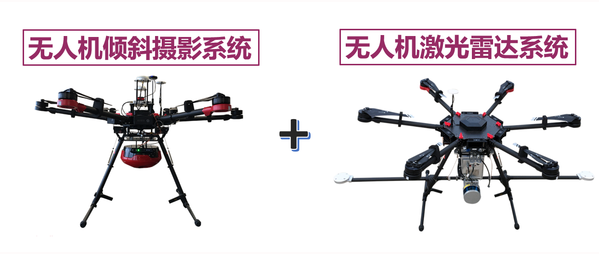

Urban Big Data Visual Analysis Platform (城市时空大数据可视分析平台——方舆 FangYu)

对城市多源、异构、海量、动态的城市时空大数据如人口数据、建筑数据、土地利用数据、智能交通系统（ITS）数据（如公交、出租车、地铁等）、手机信令、商业、产业等数据进行平台级整合，输出智慧城市行业解决方案。
- 多源城市时空数据融合.
- 时空活动行为深度挖掘.
- 云计算与深度学习算法.
- 科学数据可视分析方法.
Brief Introduction (产品简介)
Product Link (产品链接)
Shenzhen Metro Big Data Analysis Platform (深圳地铁大数据可视分析平台)

整合深圳市历年的地铁运营数据，对深圳市地铁历年客流进行体系化分析（如线网客流、线路客流、站点客流、断面客流、OD客流）；结合人口数据、建筑数据、土地利用数据、交通调查、公交线网及运行数据、共享单车等数据，对站点的区位要素和三网融合进行综合分析和评估；融合大规模人群的手机信令数据和IC卡数据，基于机器学习设计地铁清分模型和客流预测模型。
- 客流体系化分析.
- 区位要素和三网融合进行综合分析和评估.
- 基于手机信令大数据的地铁清分模型.
- 基于机器学习的客流预测模型.
Brief Introduction (产品简介)
Product Link (产品链接)
Commercial Real Estate Big Data Visual Analysis Platform (商业地产大数据可视分析平台)

本平台是专门为商业地产定制的商业客流洞察分析三维可视化分析平台。平台主要基于手机信令大数据、商业地产数据、POI数据、网络消费数据、手机APP使用等数据，为用户提供用户定制城市全城以及定制区域的人群的动态分布、人群画像的特征分析；同时基于多源数据的融合，获悉洞察商业地产的区位价值，如商业地产周边业态、周边地产价值等信息；基于手机信令与网络数据整合，洞察商业地产周边腹地人口消费能力、客流来源以及客流辐射范围；对本品和竞品的客流渗透进行定量化分析。该平台可为用户综合评估洞察区域的区位价值，客流的分布及画像，客流动态增长和流失情况、商业地产优化选址等提供决策支持。
- 人口的动态分布.
- 人群画像的特征分析.
- 商业地产的区位价值分析.
- 客流来源以及客流辐射范围定量分析.
- 本品和竞品的客流渗透进行定量化分析.
Brief Introduction (产品简介)
Product Link (产品链接)
Spatio-temporal Data Visulization and Analysis Platform (时空数据综合分析与显示平台RoseGeo)

基于WebGL，对多源、异构、多维、多时相的地理地质、人口、水文、气候气象、灾害、交通等时空数据，建立一体化的时空数据模型、组织结构与管理方法，构建高效的时空数据索引，研究海量科学数据可视化建模方法，实现对多源时空数据三维、动态综合可视化服务。
- 一体化的时空数据模型.
- 高效的时空数据组织结构与索引模型.
- 海量科学数据可视化方法.
- 天际线. (LIVE DEMO)
Brief Introduction (产品简介)
Product Link (产品链接)
Unmanned Aerial Vehicle System (无人机倾斜摄影与激光雷达系统)
无人机倾斜摄影系统在同一无人机上同时搭载5个镜头，同步采集垂直和4个倾斜方向的真实影像，获得全面的地物纹理细节及几何位置信息，重建真实的精细数字三维模型。无人机多功能激光雷达系统采用工业级IMU+GPS+激光雷达，采集高密度、高精度的三维空间信息，激光雷达点云+正射影像同步获取；高度集成GNSS、IMU、激光雷达和高清影像多传感器，可实时动态获取带有地理位置的三维空间激光点云和影像信息.
- 无人机倾斜摄影系统.
- 无人机多功能三维激光雷达系统.
- 无人机倾斜摄影系统+多功能三维激光雷达系统.
Project: Projects of Unmanned Aerial Vehicle System (无人机空间大数据生产及分析项目)